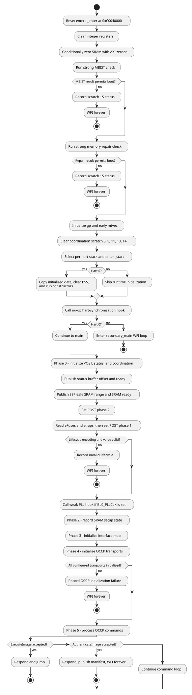
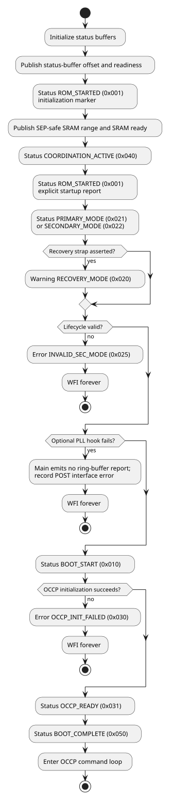
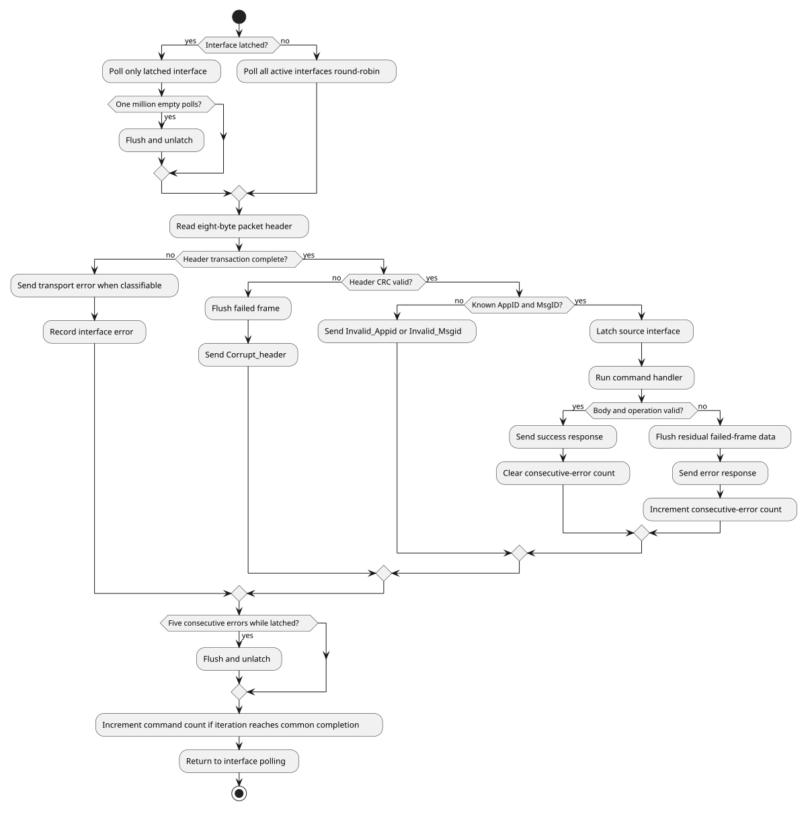

SMC Production ROM
1. Overview
The SMC production ROM establishes a usable SMC execution environment and then services Open Chiplet Configuration Protocol (OCCP) requests over target-mode I2C and I3C interfaces. It performs early SRAM handling and memory-health checks before using a stack, initializes status and coordination state, applies the ROM’s lifecycle-based access policy, and exposes commands for status, memory transfer, and boot handoff.
The ROM follows one common flow regardless of the PRIMARY_CHIPLET strap.
The strap value is reported for observability, but the ROM does not implement separate primary and secondary boot algorithms.
The implementation is divided into:
-
assembly startup in
boot/, including SRAM initialization, MBIST, memory-repair checking, trap setup, and C-runtime entry; -
the Phase 0 through Phase 5 C flow in
src/main.c; -
I2C, I3C, strap, eFuse, and optional PLL drivers in
drivers/; -
OCCP, security, status, scratch-register coordination, and ring-buffer support in
lib/; and -
the ROM/SRAM image layout in
linker/smc/smc_rom.ld.
Selected adopter-facing services are weak-symbol ROM FW integration hooks. The open definitions allow the image to build without adopter-owned PLL or I3C implementations; a final adopter ROM FW image can replace them with strong definitions before the ROM FW is frozen. The detailed sections identify the hooks where they are used. For the build-time override method and the SMC override inventory, see Immutable ROM FW Integration in the Integrator Guide.
The ROM has two terminal handoff paths.
ExecuteImage sends a success response and transfers control directly in non-secure lifecycle states.
AuthenticateImage sends a success response, publishes a manifest offset to the coordination scratch registers, and parks the SMC in wfi.
2. OCCP protocol
OCCP is a request-response protocol carried as an ordered little-endian byte stream. A controller writes one request frame to an SMC target and reads the resulting response frame. The ROM implements version 1.0.0 of the Base and Boot applications.
2.1. Packet format
Every frame begins with the same eight-byte packet header.
The body immediately follows the header, followed by a body CRC only when the Body CRC present bit is set.
The 11-bit Length field is the body length in bytes and does not include either CRC.
byte 0 bytes 1..3 bytes 4..7 Length bytes optional +------------+----------------+-----------------+------------------+----------+ | Header CRC | transport word | OCCP header | message body | body CRC | +------------+----------------+-----------------+------------------+----------+
| Frame bits | Field | Meaning |
|---|---|---|
7:0 |
Header CRC |
CRC-8 over frame bytes 1 through 7. |
8 |
Body CRC present |
A CRC follows the body when set. |
31:9 |
I3C flags |
Reserved by this implementation; transmitted as zero in responses. |
39:32 |
Application ID |
|
47:40 |
Message ID |
Command within the selected application. |
51:48 |
Flags |
Request flags. Responses echo these bits. |
52 |
Error |
Set in an error response. |
63:53 |
Length |
Body size from 0 through 2047 bytes. |
Multi-byte integers in command bodies and responses are little-endian. Addresses are 64-bit values.
2.2. Integrity checks
Header CRC uses an initial value of 0xFF, polynomial 0xD3, most-significant-bit-first processing, and no final XOR.
It always covers the seven bytes after the CRC byte.
When a body CRC is present, bodies of up to 14 bytes use the same CRC-8 algorithm.
Bodies longer than 14 bytes use CRC-32 with initial value 0xFFFFFFFF, polynomial 0x992C1A4C, most-significant-bit-first processing, and final XOR 0xFFFFFFFF.
The CRC covers only the body.
Requests with a clear Body CRC present bit are accepted without body integrity validation.
Responses that contain a body set the bit and append the applicable CRC.
Successful responses with no body clear it.
2.3. Applications and commands
| AppID | MsgID | Command | Behavior |
|---|---|---|---|
|
|
|
Returns Base application version 1.0.0. |
|
|
|
Returns one OCCP status field or one entry from a status ring buffer. |
|
|
|
Writes bytes to an allowed, 32-bit-aligned address. |
|
|
|
Reads bytes from an allowed, 32-bit-aligned address. |
|
|
|
Returns Boot application version 1.0.0. |
|
|
|
Responds and transfers control to an allowed address in a non-secure lifecycle state. |
|
|
|
Responds, publishes a manifest address to the coordination registers, and parks in |
|
|
|
Not implemented; returns error code |
2.3.1. GetVersion
The request body is empty.
Both GetVersion handlers also flush the selected receive interface before
responding. If bytes remain after the nominal zero-length request, the ROM FW
returns Oversize_msg instead of the version.
The four-byte response body is:
| Offset | Size | Field |
|---|---|---|
0 |
1 |
Major version |
1 |
1 |
Minor version |
2 |
2 |
Patch version |
Both applications currently return 1, 0, 0.
2.3.2. GetStatus
The request body is exactly two bytes containing a 16-bit status ID. The response body is one 32-bit status value.
| Status ID | Returned value |
|---|---|
|
OCCP boot-status nibble, encoded as an SMC BL0 status message. |
|
OCCP interface-status nibble, encoded as an SMC BL0 status message. |
|
OCCP command count in bits 7:0, encoded as an SMC BL0 status message. The current implementation also copies the internal-error byte into bits 15:8. |
|
Last internal implementation error, encoded as an SMC BL0 error message. |
|
Next unread SEP ring-buffer entry. |
|
Next unread SMC ring-buffer entry. |
Other status IDs return Unsupported_StatusID.
If the STATUS_RPT_DISABLE strap is asserted, every GetStatus request returns that error.
An empty SEP or SMC ring buffer returns a zero value.
The internal error field returned for status ID 0x0003 is distinct from the
protocol error codes carried by error-response bodies:
| Value | Meaning |
|---|---|
|
No error |
|
Invalid command |
|
Access violation |
|
Alignment error |
|
Interface error |
|
Security violation |
|
Buffer overflow |
|
Timeout |
|
CRC failure |
|
Incomplete transport frame |
|
Oversized transport frame |
|
General error |
These are the values defined by the software OCCP status interface; not every
value is emitted by the current handlers. In particular, misaligned read,
write, execute, and authenticate addresses record access violation (0x02);
alignment error (0x03) is defined but not emitted.
For a packet-header read that is incomplete or oversized, the wire response
uses Incomplete_msg or Oversize_msg, but the internal error field remains
timeout (0x07) because the command-loop return value has not yet been
replaced. Equivalent failures returned from a command-body handler record
incomplete (0x09) or overflow (0x0A).
2.3.3. WriteData
The request body contains a 12-byte command prefix followed by the write data.
| Offset | Size | Field |
|---|---|---|
0 |
8 |
Destination address |
8 |
2 |
Bits 10:0: write size; bits 15:11: address attributes |
10 |
2 |
Reserved |
12 |
Write size |
Data |
The header body-length field must be from 12 through 2047 bytes. The encoded write size must be from 1 through 2035 bytes. The current handler validates these two values independently; it does not require the body-length field to equal 12 plus the encoded write size. The address attributes and reserved field are parsed but do not affect behavior. The destination must be 32-bit aligned and pass the target’s memory-access policy. For a four-byte transfer, the ROM FW performs one 32-bit access. For an eight-byte transfer to an eight-byte-aligned address, it performs one 64-bit access. All other transfer sizes use byte accesses in increasing address order. A successful response has an empty body.
2.3.4. ReadData
The request body is exactly 12 bytes.
| Offset | Size | Field |
|---|---|---|
0 |
8 |
Source address |
8 |
2 |
Bits 10:0: read size; bits 15:11: address attributes |
10 |
2 |
Reserved |
The read size must be from 1 through 2047 bytes. The address attributes and reserved field do not affect behavior. The source must be 32-bit aligned and pass the target’s memory-access policy. For a four-byte transfer, the ROM FW performs one 32-bit access. For an eight-byte transfer from an eight-byte-aligned address, it performs one 64-bit access. All other transfer sizes use byte accesses in increasing address order. The response body is the requested data and always carries a body CRC.
2.3.5. ExecuteImage and AuthenticateImage
Both commands use the same ten-byte body:
| Offset | Size | Field |
|---|---|---|
0 |
8 |
Execution or manifest address |
8 |
1 |
CPU ID |
9 |
1 |
Bits 2:0: reserved; bits 7:3: address attributes |
The CPU ID, reserved bits, and address attributes do not affect ROM behavior. The address must be nonzero, 32-bit aligned, and pass the target’s memory-access policy. The SMC ROM applies that policy to an eight-byte range beginning at the supplied address.
ExecuteImage is accepted only in a non-secure lifecycle state.
In a secure lifecycle state it returns Invalid_Msgid.
When accepted, the ROM sends an empty success response, records boot
completion, and jumps to the address.
AuthenticateImage is accepted in every valid lifecycle state.
After the empty success response, the ROM converts an in-range SRAM address to an offset in scratch register 8, sets MANIFEST_READY in scratch register 9, and remains in wfi.
An address outside the SMC SRAM range produces the scratch-register marker
0xFFFFFFFF; the current handler still sets MANIFEST_READY.
2.4. Error responses
An error response sets the header Error bit and has a four-byte body containing the numeric error code.
It always includes a CRC-8 body CRC.
The response normally echoes the request AppID, MsgID, and flags.
For a corrupt header CRC, AppID and MsgID are both 0xFF because the request identifiers are not trusted.
| Code | Name | Condition |
|---|---|---|
|
|
The application is not implemented. |
|
|
The message is not implemented for the application, or |
|
|
A command body length or encoded transfer size is invalid. |
|
|
Header CRC validation failed. |
|
|
Body CRC validation failed. |
|
|
An address is null, misaligned, outside an allowed range, or overlaps protected memory. |
|
|
A status ID is unsupported, status reporting is disabled, or |
|
|
Defined by the implementation but not emitted by current handlers. |
|
|
Defined by the implementation but not emitted by current handlers. |
The transport binding also uses 0x00010000 for an incomplete frame, 0x00010001 for an oversized frame, and 0x00010002 for a transport CRC failure.
The I2C/I3C binding does not generate the transport-CRC error.
When the eight-byte header itself is incomplete or oversized, the error
response also uses AppID and MsgID 0xFF because no valid header is available.
2.5. I2C and I3C transport binding
The controller sends the packet header, body, and optional body CRC in one target-write transaction.
The ROM first consumes the eight-byte header, then consumes the declared body and CRC from the same transaction.
A transaction ending before the expected byte count produces Incomplete_msg; bytes beyond the expected end produce Oversize_msg.
On protocol or framing errors, the ROM discards residual bytes belonging to the failed frame before sending the error response.
The controller obtains the response with a target-read transaction. For the open HCI I3C target implementation, response data is queued before the transmit descriptor advertises its length. Reads made before a response is armed are not accepted by the target hardware; the controller retries until the response descriptor is available. Large responses are streamed while the hardware drains the transmit queue. The I3C receive path retains frame-length accounting across the separate header and body reads, allowing it to distinguish incomplete, exact, and oversized writes.
I2C uses the target driver’s transaction boundaries for the same exact-length checks.
The transport timeout comes from eFuse RESERVED_1 in system-clock polling iterations; a zero value selects 10,000.
3. Boot flow
The assembly entry path runs before any stack or writable global data is used.
After the C runtime is ready, hart 0 runs Phase 0 through Phase 5.
Other harts remain in the runtime’s wfi loop.

3.1. Assembly early boot
_enter performs these operations in order:
-
Clear general-purpose registers
x1throughx31. -
Call
__metal_sram_init_early. -
Call the strong
__metal_mbist_early_checkimplementation. -
Call the strong
__metal_memory_repair_checkimplementation. -
Establish
gp. -
Install
early_trap_vectorinmtvec. -
Clear coordination scratch registers 8, 9, 11, 13, and 14 while preserving scratch register 15.
-
Establish a 16-byte-aligned stack for the current hart and call
_start.
On hart 0, the C runtime copies initialized data from ROM, clears BSS, and
initializes TLS and constructors.
Other harts skip that initialization.
Every hart calls __metal_synchronize_harts, whose implementation linked into
the production ROM FW is a no-op, and then disables its interrupt sources.
Hart 0 calls main; the other harts enter the secondary_main wfi loop.
Unused ROM is filled with the 32-bit EBREAK instruction.
Once the early trap vector is installed, a breakpoint whose mepc lies in the linker-defined padding range writes 0xBADF00D0 to scratch register 15 and loops.
Other early traps write 0xFFFFFFFF to scratch register 0 and loop.
3.2. C boot phases
Initializes POST tracking, the software OCCP status word, both status ring buffers, and scratch coordination. Status initialization publishes the SEP ring-buffer offset, sets the status-buffer-ready bit, and emits its initial ring-buffer marker. The main flow then publishes the SEP-safe SRAM range and sets the SRAM-initialized bit. After publishing that state, the implementation writes POST phase 2 before it starts the phase 1 strap and eFuse work.
Caches the eFuse and strap fields used by the ROM.
The ROM validates the differential lifecycle encoding and halts on an invalid encoding or unsupported lifecycle value.
If BL0_PLLCLK is set, it calls smc_pll_init; the open implementation is a weak hook that returns success without programming a PLL.
Records the SRAM setup phase again after phase 1 completes. The actual conditional zeroing and memory-health checks have already completed in assembly.
Marks I2C0, I2C1, I3C0, I3C1, and I3C3 enabled in the software map. The current ROM uses one common map for all strap roles. OCCP initialization currently configures that same fixed set directly rather than querying the software map.
Initializes the fixed target-interface set, updates the OCCP interface status, and drives status GPIO 58 high on success or low on failure. Any initialization error is fatal to the C boot flow.
Enters the non-returning command loop described in OCCP command processing.
The ROM FW emits the SMC_STATUS_BOOT_COMPLETE ring-buffer value when the loop
is entered, but it does not set POST boot phase 6 at that point. POST phase 6
is set only before an accepted ExecuteImage transfers control.
Direct execution or authenticated handoff terminates command processing as
described in OCCP protocol.
4. Hardware initialization
4.1. Straps and eFuses
Early assembly reads strap registers at 0xC0405800 and 0xC0405804.
The C strap driver later caches the fields used for reporting or policy.
Boot stall is controlled by the dedicated GPIO 57 hardware path before ROM
execution and is not a captured strap.
| Strap | Bit | ROM use |
|---|---|---|
|
13 |
Skips the assembly memory-repair result check and records the bypass status. |
|
14 |
Cached by the strap driver; no later ROM behavior depends on it. |
|
18 |
Reported in the POST word; it does not alter the interface map. |
|
19 |
Reported as a warning and in the POST word; it does not select a different ROM flow. |
|
20 |
Controls whether the ROM calls the optional |
|
21 |
Causes |
|
22 |
Cached by the strap driver; no later ROM behavior depends on it. |
|
25 |
Reported in status and POST state; it does not select a different boot algorithm. |
|
26 |
Requests explicit SRAM clearing with the AXI zeroer. |
|
54 |
Skips the assembly MBIST result check and records the bypass status. |
|
58 |
Cached by the strap driver; no later ROM behavior depends on it. |
The four chip-ID strap bits are read from STRAPS_LO bits 11, 12, 15, and 23.
They contribute to the I2C/I3C identifier fallback described in Address selection.
The eFuse driver reads I2C/I3C identifier slots 0, 1, 3, 6, and 7 and the RESERVED_1 transport timeout.
Early assembly additionally reads:
-
RESERVED_0[6], which requests explicit SRAM clearing; and -
RESERVED_2[0], which permits boot to continue after an MBIST or memory-repair failure while preserving the failure code in scratch register 15.
4.2. SRAM initialization
Hardware auto-zero is assumed unless either SRAM_AUTO_ZERO_DISABLE or eFuse RESERVED_0[6] is set.
When explicit clearing is requested, __metal_sram_init_early:
-
disables machine interrupts while configuring the operation;
-
writes SRAM base
0xC0060000to zeroer destination register0xC0038200; -
writes size
0x00100000to zeroer size register0xC0038208; -
writes zero to control/status register
0xC0038210to start the operation; -
waits while busy bit 32 is set; and
-
restores the previous
mstatus.
The ROM does not perform a DMA-reset step.
4.3. MBIST and memory repair
The production ROM FW image links strong overrides for both early checks, so
the weak no-op definitions in mbist_check.S are not used.
Both checks read the SMU DFX status register at 0xC000B800.
They run after SRAM initialization and before stack setup.
The MBIST check uses:
-
bit 4,
mbist_done; -
bit 8,
mbist_pass; and -
bit 12,
mbist_abort.
If MBIST was not run, the ROM continues.
If it passed, the ROM continues.
An abort records 0xDEADC0DE and halts.
A failure records 0xDEADBEEF and halts unless eFuse RESERVED_2[0] permits continuation.
Scratch register 15 contains 0x12345678 while the MBIST result check is in
progress.
MEM_BIST_BYPASS records 0x12340002 and skips the check.
The memory-repair check uses:
-
bit 0,
mem_repair_done; and -
bit 1,
mem_repair_success.
If repair was not run or succeeded, the final status is normally 0x600DCAFE.
A failure records 0xBADC0FFE and halts unless eFuse RESERVED_2[0] permits continuation.
MEM_REPAIR_BYPASS records 0x12340001 and skips the check.
On its normal completion path, the repair check preserves a preceding MBIST failure, timeout, or bypass status.
If both bypass straps are asserted, the memory-repair check runs second and
replaces the MBIST-bypass value with 0x12340001.
4.4. Clock hook
The C flow calls smc_pll_init only when BL0_PLLCLK is asserted.
The open implementation is weak and its internal configuration function performs no register writes, so the default behavior is a successful no-op.
An adopter ROM FW build may provide a strong implementation through the
build’s additional driver-source hook.
If that implementation returns any value other than SMC_PLL_SUCCESS, the
ROM records an interface error and remains in wfi.
5. Memory and security
5.1. Image and SRAM layout
| Range | Size | Use |
|---|---|---|
|
128 KiB |
Executable ROM image. Unused bytes are filled with |
|
1 MiB |
SMC SRAM used for initialized data, TLS, BSS, stacks, heap, status buffers, and externally loaded data. |
The linker places .data, TLS, .bss, stacks, and heap upward from the SRAM base.
The global OCCP request buffer and the large read-response workspace are ordinary .bss objects; they do not occupy a separately fixed high-address window.
Two smc_ring_buffer_t objects are addressed downward from the exclusive SRAM end, 0xC0160000.
The SEP ring buffer is the last object in SRAM, and the SMC ring buffer immediately precedes it:
SMC_STATUS_BUFFER_ADDR = 0xC0160000 - 2 * sizeof(smc_ring_buffer_t) SEP_STATUS_BUFFER_ADDR = 0xC0160000 - sizeof(smc_ring_buffer_t)
Each structure contains three 32-bit metadata fields and 512 32-bit entries.
The code also defines 0xC0066400 through 0xC015AFFF as the SEP-safe region published in scratch registers 13 and 14.
5.2. OCCP memory-access policy
All read, write, execute, and authenticate handlers reject a zero-length policy check, arithmetic wraparound, or an access overlapping 0xC0060000 through 0xC00663FF.
That fixed 25 KiB range protects ROM-owned writable state regardless of lifecycle.
Read, write, execute, and authenticate addresses must also be 32-bit aligned; execute and authenticate addresses must be nonzero.
In a secure lifecycle state, the complete access must lie in 0xC0066400 through 0xC015FFFF.
In another valid lifecycle state, the policy function allows addresses outside SRAM as long as they do not overlap the protected ROM-owned SRAM range.
ExecuteImage adds a lifecycle check and is rejected in secure states.
AuthenticateImage uses the common policy check, then converts the address to an SRAM-relative offset for scratch register 8.
Both boot-command handlers validate an eight-byte range beginning at the
supplied address, so the complete range must satisfy the policy.
The offset helper accepts only 0xC0066400 through 0xC015FFFF; if a non-secure request supplies another otherwise permitted address, it writes the invalid marker 0xFFFFFFFF.
The current command handler still sets MANIFEST_READY after that marker is written.
The access policy does not reserve the status ring buffers from OCCP memory commands.
5.3. Lifecycle handling
The lifecycle register is CHIP_CONFIG.LC_STATE at 0xC000290C.
The ROM reads all eight bits as a differential encoding:
raw[7:4] == ~raw[3:0]
An encoding mismatch is invalid. For a valid encoding, the low nibble selects the policy:
| Low nibble | Classification | ROM policy |
|---|---|---|
|
Test/development |
Non-secure |
|
Production |
Secure |
|
RMA SoP |
Non-secure |
|
RMA chiplet |
Non-secure |
|
Production end |
Secure |
|
Invalid |
Record an error and remain in |
This classification affects OCCP address bounds and ExecuteImage.
It does not select different interface maps or role-specific boot flows.
6. Communication interfaces
The ROM enables the same target-interface set for every strap role:
-
I3C controllers 0, 1, and 3; and
-
I2C controllers 0 and 1.
I3C2 remains disabled in the software interface map.
The BOOT_I2C, BOOT_RECOVERY, and PRIMARY_CHIPLET straps are observable state but do not change this map.
6.1. Address selection
I3C controllers 0, 1, and 3 use eFuse identifier slots 0, 1, and 3.
The eFuse driver reads each slot as two 32-bit words but caches it in a 32-bit field, so the current ROM passes only the low 32 bits onward.
I2C controllers 0 and 1 take the low seven bits of slots 6 and 7.
An I2C value outside 0x08 through 0x77 is replaced with 0x55.
If a selected eFuse slot is zero, the ROM forms a fallback identifier by ORing the four-bit chip ID from straps with CHIP_CONFIG.CHIP_ID << 5.
The same fallback function is used for I2C and I3C slots.
I3C channels are started in subordinate mode. I2C channels are initialized in target mode.
6.2. Driver selection
The default I3C target symbols are weak. Their initialization functions succeed so the ROM remains linkable without an active I3C implementation, while their data methods report a hardware error and their receive-availability method reports no data. An adopter ROM FW build can replace those symbols with a strong driver.
Setting I3C_CORE=chipsalliance at build time enables the open MIPI HCI/I3CCSR implementation in i3c_hci_driver.c.
That implementation configures the target transaction interface, static address, dynamic-address-assignment acceptance, queue thresholds, and open-drain timing.
The HCI path reaches the pads through the LSIO selection and therefore leaves the GPIO hardware-function override clear. Every non-HCI build enables the GPIO hardware-function override for the I3C pad set before driver initialization, whether it uses the weak default or a strong platform driver. The ROM does not program GPIO drive strength from eFuses.
6.3. I3C response flow control
The HCI target implementation advertises a response only after response data is available. For responses that fit in the transmit queue, it writes all data and then writes the transmit descriptor. For larger responses, it fills the queue, writes the descriptor when the queue first becomes full, and continues filling as hardware drains data. The target hardware does not accept a private read until its response-start threshold is met.

The HCI receive implementation separately tracks each inbound frame’s descriptor length and unconsumed bytes. That accounting persists across the OCCP layer’s header and body reads and supports exact incomplete/oversized-frame reporting. See OCCP protocol for the packet binding and controller-visible errors.
6.4. GPIO side effects
During OCCP initialization, the ROM enables the hardware-function override for CAT_THERM on GPIO 52. After transport initialization, GPIO 58 is configured as an output and driven high when all requested channel initializations succeeded or low when any failed. No status-sequence protocol is implemented on that GPIO.
7. Status and coordination
7.1. Scratch registers
The CPU-control block begins at 0xC0039000.
Scratch register 0 is at 0xC0039080; consecutive scratch registers are eight bytes apart.
| Index | Address | Use |
|---|---|---|
0 |
|
Simulation pass/fail and generic early-trap indication. |
1 |
|
Structured POST word. |
2 |
|
Virtual console output in debug-enabled builds. |
8 |
|
Manifest offset from SRAM base, or |
9 |
|
SMC-to-SEP coordination bits. |
10 |
|
Available through the MBIST-failure helper; the assembly checks use register 15. |
11 |
|
SEP status-buffer offset from SRAM base. |
13 |
|
SEP-safe SRAM start offset from SRAM base. |
14 |
|
SEP-safe SRAM size in bytes. |
15 |
|
MBIST, memory-repair, or ROM-padding-trap status. |
Assembly clears registers 8, 9, 11, 13, and 14 after installing the early trap vector. It deliberately preserves register 15.
| Bit | Name | Set when |
|---|---|---|
0 |
SRAM initialized |
Status buffers and the safe-region description have been initialized. |
1 |
Manifest ready |
|
2 |
Status buffer ready |
Scratch register 11 contains the SEP ring-buffer offset. |
3 |
SRAM protected |
Defined by the interface but not set by the current ROM. |
The published SRAM addresses are offsets from 0xC0060000.
The normal values in registers 13 and 14 describe 0xC0066400 through 0xC015AFFF.
7.2. Ring buffers
The ROM initializes separate SMC and SEP ring buffers at the end of SRAM.
Each holds 512 32-bit entries plus head, tail, and num_entries fields.
A write to a full buffer advances the tail and overwrites the oldest entry.
A read returns the oldest unread entry and advances the tail.
Status messages use this format:
| Bits | Field | Encoding |
|---|---|---|
31:24 |
Message type |
|
23:16 |
Firmware ID |
|
15:0 |
Value |
Boot or command-specific status value |
7.3. Ring-buffer status values
The SMC ROM FW writes the following boot values to the SMC ring buffer. Primary, secondary, and recovery values report sampled straps; they do not select different ROM FW algorithms.
| Value | Name | Type | Current emission |
|---|---|---|---|
|
|
Status |
|
|
|
Status |
After strap, eFuse, lifecycle, and optional PLL processing. |
|
|
Warning |
When the recovery strap is asserted. |
|
|
Status |
When the primary-chiplet strap is asserted. |
|
|
Status |
When the primary-chiplet strap is deasserted. |
|
|
Error |
Before halting on an invalid lifecycle encoding or value. |
|
|
Error |
Before halting when any configured OCCP transport fails initialization. |
|
|
Status |
After all configured OCCP transports initialize successfully. |
|
|
Status |
After the SEP-safe SRAM range and SRAM-ready indication are published. |
|
|
Status |
When the ROM FW enters the OCCP command loop, and again before an accepted
|
|
|
Error |
Only if the normally non-returning OCCP command loop returns. |
OCCP processing uses the following value families. Values described as
“base OR data” use SMC_OCCP_ERROR_WITH_DATA to OR the base with the low
eight bits of the associated command or error value. Access-denied details use
SMC_OCCP_ERROR_WITH_NIBBLE, which computes
base | ((detail & 0xF) << 8).
| Base value | Name | Current use |
|---|---|---|
|
|
Packet-header transport read failure. |
|
|
Unknown application or message ID; data identifies the rejected value. |
|
|
Header validation, command execution, or interface-unlatch detail. Unlatch events use warning type; command failures use error type. |
|
|
Invalid or excessive |
|
|
Misaligned or policy-rejected read address. |
|
|
Invalid or excessive write-command length. |
|
|
Misaligned or policy-rejected write address. |
|
|
Defined for authenticate security failures but not emitted by the current implementation. |
|
|
Authenticate transport, address, or policy failure. |
|
|
Accepted |
|
|
|
|
|
|
Handler-specific error values do not replace the command loop’s common error
report. After most handlers return an error, the loop emits a second
SMC_OCCP_ERROR_CMD_FAILED value with the returned internal error code.

The STATUS_RPT_DISABLE strap does not disable ring-buffer initialization or writes.
It only rejects OCCP GetStatus.
7.4. Software OCCP status word
The ROM maintains an in-memory 32-bit status word:
| Bits | Field | Current update behavior |
|---|---|---|
3:0 |
Boot status |
Initialized to zero. The current main flow does not advance this field. |
7:4 |
Interface status |
Set to ready after successful transport initialization or error after failure. |
15:8 |
Command count |
Incremented when a successful packet-header transport read reaches the common end of the command iteration, including header-validation and dispatch errors; wraps from 255 to 0. Header-read transport failures and successful terminal handoffs are not counted. |
23:16 |
Last internal error |
Updated after command failures. |
31:24 |
Reserved |
Zero. |
GetStatus IDs 0x0000 through 0x0003 expose individual fields in the status-message envelope described in OCCP protocol.
7.5. POST word
Scratch register 1 carries a structured development-observability word.
| Bits | Field | Values used by the ROM |
|---|---|---|
31:28 |
Boot phase |
0 initialization, 1 straps/eFuses, 2 SRAM setup, 3 interface setup, 4 OCCP ready, 5 OCCP processing, 6 boot complete, 7 error |
27:24 |
OCCP state |
0 idle, 1 command received, 2 processing, 3 response ready, 4 complete, 5 error |
23:20 |
Latched interface |
0 none, 1 I3C0, 2 I3C1, 4 I3C3, 5 I2C0, 6 I2C1 |
19:16 |
Error |
0 none, 1 SRAM, 2 interface, 3 command, 4 access, 5 invalid security mode |
15:12 |
Security decisions |
Bits indicate secure, production, and RMA SoP classifications. |
11:8 |
Boot observations |
Bits indicate primary strap, recovery strap, I2C boot strap, and SRAM-auto-zero-disable strap. |
7:4 |
Strap observations |
Bits 7 and 4 are reserved; bits 6 and 5 indicate status-report disable and memory-repair bypass. |
3:0 |
Coordination |
Bits indicate SRAM ready, manifest ready, status buffer ready, and coordination active. |
POST state reports decisions made by the current ROM; it is not a separate boot-control interface.
During startup, the implementation writes boot-phase values in the sequence
0, 2, 1, 2, 3, 4, and 5. The first phase-2 write follows publication of the
SRAM coordination state; phase 1 then records strap and eFuse processing, and
the second phase-2 write records the explicit C-flow SRAM phase.
The SMC_STATUS_BOOT_COMPLETE ring-buffer value emitted on entry to the OCCP
loop does not set POST boot phase 6. The ROM FW sets phase 6 only immediately
before an accepted ExecuteImage transfers control.
8. OCCP command processing
This section describes the ROM command-loop implementation. Packet formats, command semantics, CRCs, transport binding, and controller-visible errors are defined in OCCP protocol.

8.1. Polling and latching
Before latching, the loop polls each active interface in array order: I3C0, I3C1, I3C3, I2C0, and I2C1. After an unlatch, round-robin polling begins with the interface after the one just released.
The ROM latches when it receives a header with a valid CRC and a numerically recognized AppID/MsgID. Latching occurs before command-body length, CRC, address, and execution checks, so a recognized command that later fails validation still selects the interface. While latched, traffic on other interfaces is ignored.
One million polling iterations without receive data causes the current interface to be flushed and unlatched.
While an interface is latched, five consecutive header-read or
command-execution errors also cause an unlatch.
Errors received before any interface is latched do not increment that
threshold counter.
A successfully completed handler clears the consecutive-error count.
smc_occp_force_unlatch exposes the same unlatch operation to linked ROM FW
code.
8.2. Receive and dispatch
The loop reads the eight-byte packet header first. For a valid header, it dispatches directly on AppID and MsgID. Each handler then checks its required body length, reads the body plus optional CRC, validates body integrity, performs command-specific policy checks, and sends a response.
The POST OCCP-state field progresses through command received, processing, response ready, and complete or error.
The software OCCP command count increments when a packet-header transport read
succeeds and processing reaches the common end of the command iteration. This
includes header-validation failures, invalid application or message IDs, and
handlers that return success or error.
Successful ExecuteImage and AuthenticateImage handlers do not return and
therefore do not increment the count.
Initial header-read failures return to polling before that increment.
8.3. Failed-frame cleanup
Failed-frame cleanup occurs in these contexts:
-
header-validation errors flush residual body data before transmitting the error response;
-
the
GetVersionhandlers flush unexpected residual bytes and reportOversize_msgwhen any are found; -
a command failure flushes residual data unless its error-response path already performed the flush; and
-
an unlatch flushes the selected interface before returning to all-interface polling.
The I2C flush is bounded by the configured transport timeout and a maximum of 2,079 bytes. The HCI I3C flush is frame-aware: it discards bytes owed by the abandoned frame and complete stale frames already represented by descriptors, then stops when that frame ledger is clean. It does not use an idle-time window to consume newly arriving commands.
8.4. Terminal commands
ExecuteImage sends its success response before transferring control and therefore never returns to this loop.
AuthenticateImage sends its success response before publishing the manifest coordination state and parking in wfi.
No command-processing or status-only service loop remains active after AuthenticateImage.